Calling all cat lovers! Need an easier way to find all the necessary information you are looking for in the Little Wanderers NYC website, such as the Donation process, finding adoptable cats, and learning how to best take care and support the cats? We've got you covered! Check out our new concept (not a real product- created for an academic bootcamp) for the non-profit's redesigned website, which includes a more direct donation process, detailed adoptable cat information, and all of your cat support needs!
Ronald Weasley, a 34-year-old social media activist, frequently donates to charities and non-profits based on his passions, especially ones related to animals. He is excited to learn about Little Wanderers NYC, however, as he conducts reaseach on their website, he feels surprised that the contact information is sparsed throughout the pages, the donation action is not as intuitive to find, and some features disappear when he opens the home page. Ronald wishes there was an easier way to find the information he is seeking in order to feel more confident when supporting/donating to their organization.
As UX Researchers/Designers, we are redesigning the website's layout so that users can easily find the resources they need, which, in turn, will help them feel more confident in their decision to donate, adopt, and/or support the non-profit and their animal welfare mission.
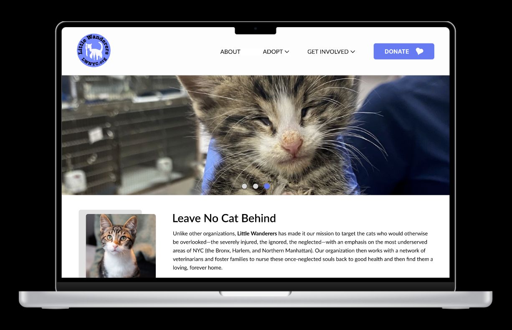


Meet Little Wanderers NYC; an animal welfare non-profit that was founded in 2017 and is "committed to saving cats from the five boroughs of New York City".
Although the non-profit consistently advertises and promotes their work and cats on social media, it was observed that their website contained several broken links throughout their eight pages, the donation action was not placed in an intuitive manner (it is currently display under the Support Us page), and the adoption section is only located on their homepage and would occasionally disappear when you refreshed the site.
Seeing as the organization strives to do great things for the cats and kittens of New York, my group and I made it our goal to establish a hypothetical redesigned layout (not a real product) for the website that could help to promote their work, increase the amount of donations they receive, and one that could help improve the process users faced when adopting a cat or kitten through their website (in our case, to help users learn more about the cats so that they could feel confident in their decision to adopt and help the non-profit).
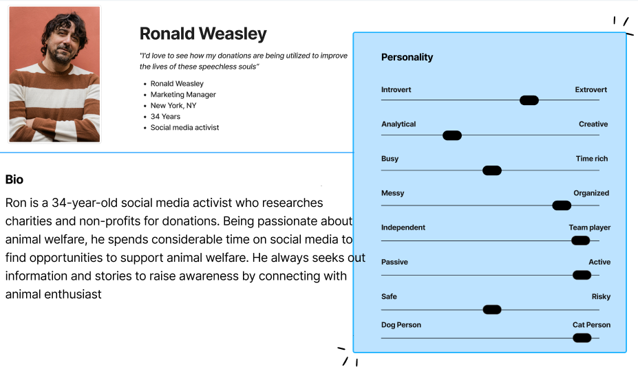
We began our process by designing the following proto-persona, Ronald Weasley, as someone who researches charities and non-profits and someone who is eager to support animal welfare.
For Ronald, it is important to understand what the organization strives to do, how they help their animals, and why he should donate to their cause.
From there, we established our User Research Plan and User Survey with the goal to understand what encourages people to support a non-profit, what ignites the decision to donate to a cause that they are passionate about, and to understand the process people go through when adopting their pet(s).
When completing our interview script, we focused on asking questions that would help us understand the reason behind a user's desire to support charities and non-profits, as well as to gain insight on what we, as UX Researchers and Designers, could do to help enhance Little Wanderers website outreach so that they could meet their goals (we also had our users explore the current layout of the website during the interview process).
Once we transcribed our interviews, we then compiled our affinity diagram with findings and quotes. As we categorized the sticky notes, we found that our common themes/focuses included: Supportive Content, Donations, and Research/Discovery.
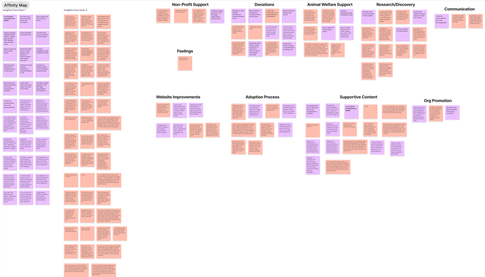
Going through the interview process helped us understand that our users:
Once we compiled our research and observations, we were able to update Ronald Weasley's persona information to the following:

The next step was to come up with potential solutions that could help facilitate the user's decision to donate, support the non-profit, and learn about their objectives/needs/goals. In order to do so, we conducted an I Wish/I Want/What If brainstorming session to help us generate idea that could be applied to our redesign and meet our users' goals.


Once we completed the dot voting for the ideas that best suited our users' goals for the website, we placed them on a Feature Prioritization Matrix.

In addition to improving the donation process, our solutions for this redesign would also include the following enhancements:
Next, we created a User Storyboard and Journey Map for Ronald to tell the tale behind how he found Little Wanderers and how their donation process helped him feel confident that he was donating to the right non-profit.
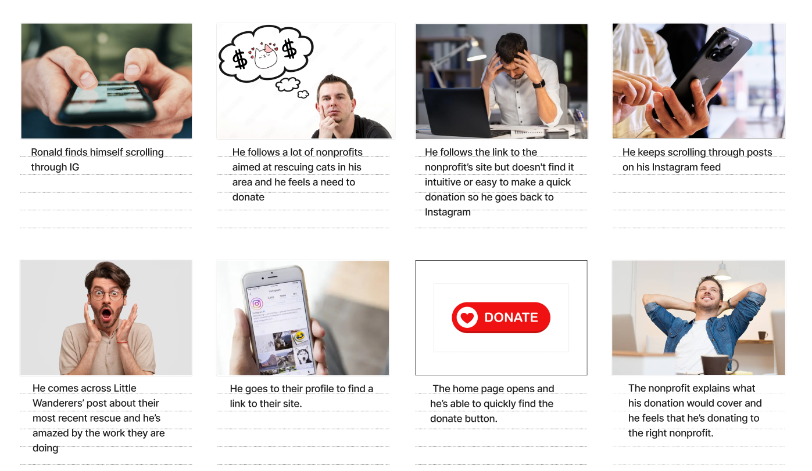

Once we had established the direction for how we wanted to support our users when viewing the website, we focused on creating a user flow that defined the steps Ronald took to complete his donation process:

After my group members and I agreed on the initial concept of our flow, we were ready to start designing Ronald's experience!
Before we got into the lo-fi designs, my team and I conducted a heuristic evaluation and annotation analysis based on the website's existing layout. As we went through both forms of analysis, we came across the following observations:

.png)
Our paper wireframes followed the path we set in our user flow:

After my partner drew the paper sketches, I proceeded to draft the digital wireframes in Figma.

Beyond the user flow, my team and I started to draft out the lo-fi layout for the other pages, such as the Adoptable Cats page, Home page, and the About Us page.
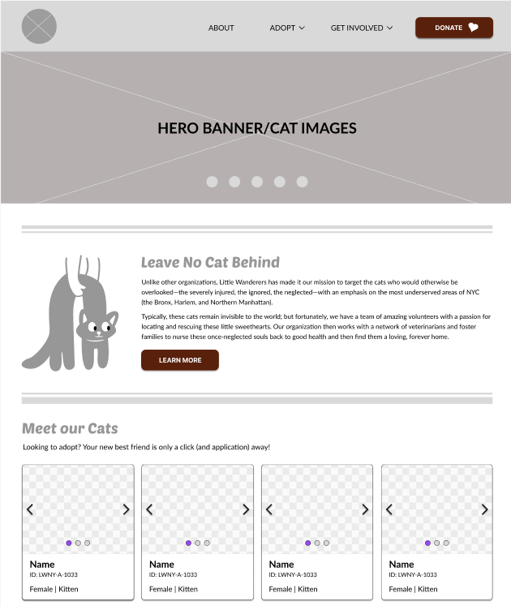
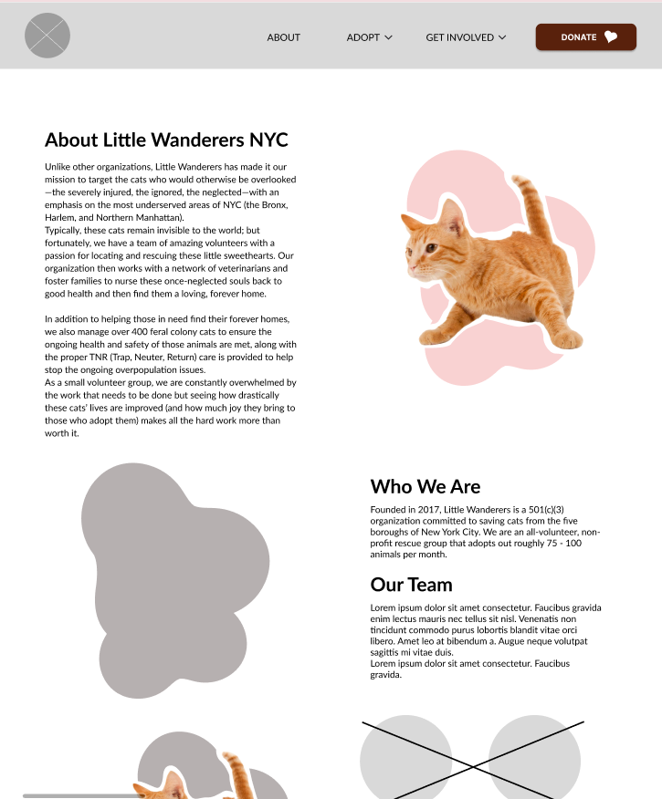
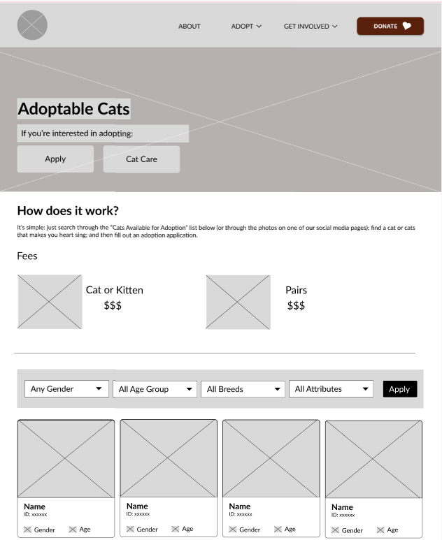
Additionally, we iterated on the existing information architecture to reduce the amount of primary navigation options users saw in the top bar. Prior to the redesign, the website had seven pages and one call-to-action button. Our redesign focused on displaying three primary navigation options and six secondary navigation menu options (three each within the "Adopt" and "Get Involved" tabs), as well as a DONATE call-to-action button.

Our goal for this adjusted architecture was to allow users to find the pages directly within the categories they fell under, rather than clutter the navigation bar with each page representing a primary navigation option.
Once our digital lo-fi was ready and the prototyped connections were set, we were ready to test. In this round of testing, we asked our users to complete the following two tasks:
Make a one-time donation.
View an adoptable cat's bio.
By the end of our testing sessions, it was noted that all tasks were completed successfully by the users. Additionally, the following feedback/suggestions were brought up during the tests:
Our next step was to take this feedback back to the drawing board and to carry those ideas over to our mid-fi designs.
Prior to designing the mid-fi, however, we worked on building our style guide to follow a more accessible color scheme (the current blue/white color scheme did not pass the WCAG testing), and to use a friendlier set of fonts that could be used consistently thorughtout the site. Additionally, my partners and I used Figma to build components that would be used throughout the website, such as form fields, image galleries, buttons, cards, the navigation menu (with hover over dropdown fields), and so forth! All of these elements were planned out with responsiveness in mind; below, you will see that our style guide shows how the fonts/images/components would be formatted for a desktop vs. a mobile view.
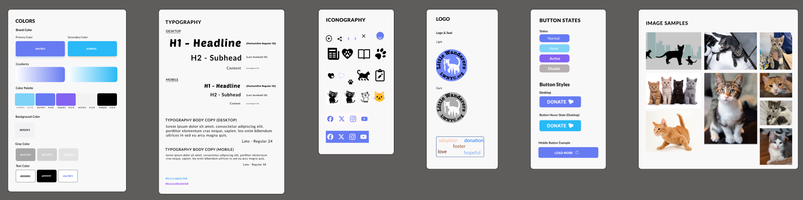
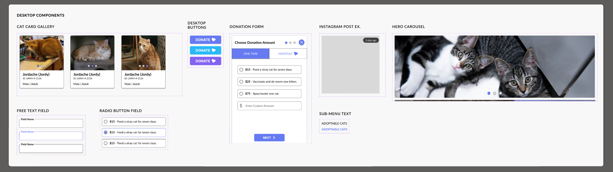
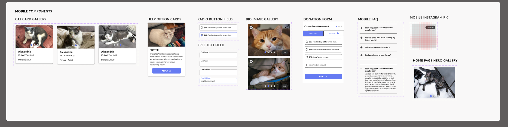
Once I finished the design for the mid-fi pages (the full website for both the desktop and mobile view), it was time to do our second round of testing!
For this mid-fi usability test, we asked our users to explore the website on the computer and phone and provide first impressions, in addition to completing the donation and adoption bio tasks. By the end of our tests, it was noted that all tests were completed with an 100% success rate. With regards to the first impressions and tasks they were presented with, our testers mentioned that they found it easy to locate information while navigating through the redesign and that they liked the overall layout of the pages.
They also noted the following items that our designs could improve upon:
I also conducted an A/B test during the sessions for the Cat Bio cards; we had two different bio layouts displayed for two different cats in the desktop prototype. Both testers, when asked which one they preferred, chose Adoptable Cat Bio Option #2 based on it's layout and how easy they felt it was to read through. So in addition to the feedback, we would also apply card #2 for the remaining prototyped bio screens.
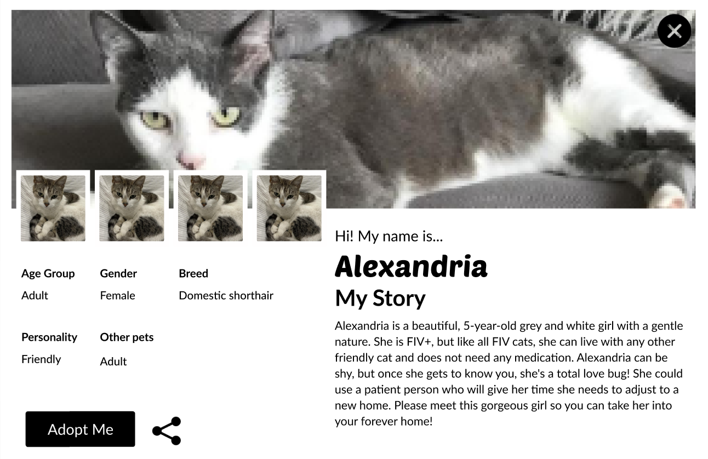
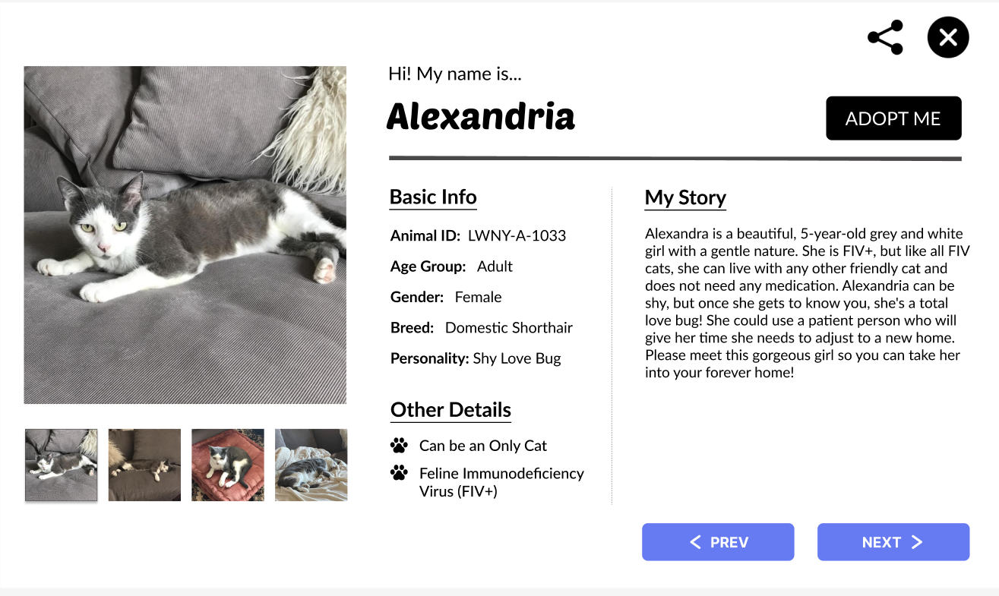
All of these adjustments can now be seen in the hi-fi prototypes (desktop and mobile) below:
© Rachel MacDonald 2024